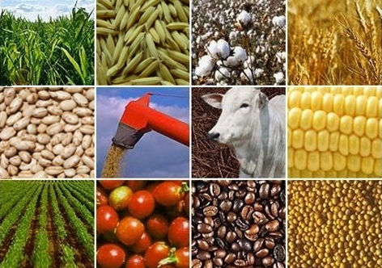

Explicação
Muitos alimentos que consumimos diariamente, como arroz, feijão, leite, frutas e hortaliças, vêm diretamente do campo. Esta seção explica como esses produtos são cultivados, colhidos, armazenados e transportados até os mercados e feiras das cidades.
A Origem dos Alimentos em Toledo e Região
Toledo, localizada no Oeste do Paraná, é reconhecida como a Capital Paranaense do Agronegócio. Pelo 11º ano consecutivo, lidera o ranking estadual do Valor Bruto da Produção Agropecuária (VBP), com destaque nas cadeias produtivas de suínos, frangos, milho e soja . 21 milhões de sacas de café de 60 kg cada! Segundo a AEN PR, a safra paranaense de café para o ano de 2024 está projetada para arrecadar entre 700 e 750 mil sacas.
A Jornada dos Alimentos
Arroz e Feijão: Embora Toledo não seja o principal produtor desses grãos no Paraná, a cidade integra a cadeia de distribuição, recebendo e comercializando esses alimentos essenciais.
Leite: A região Oeste do Paraná, incluindo Toledo, destaca-se na produção de leite, com o município contribuindo significativamente para o volume estadual.
Frutas e Hortaliças: A produção local abastece feiras e mercados, promovendo o consumo de alimentos frescos e saudáveis.
Feiras e Mercados: Pontes entre Produtores e Consumidores
Toledo conta com a Feira do Produtor Rural, onde agricultores locais comercializam diretamente seus produtos, fortalecendo a economia local e promovendo o consumo consciente
Depoimentos de Produtores Rurais de Toledo (PR)
Carlos Stuany – Piscicultor em Toledo – "Nos cinco alqueires de terra que recebi como herança, apostei na piscicultura como base de sustento para a família. Em 2020, fui reconhecido com o prêmio 'Orgulho da Terra' pela qualidade do meu trabalho."
Produtores de Grãos e Suínos – Toledo – "Produzimos grãos e também trabalhamos com granja. Dessa forma, conseguimos ter mais rentabilidade. Soja e milho produzidos na propriedade da família são quase todos consumidos na granja. Normalmente, a produção de suínos proporciona mais lucros do que a produção da oleaginosa."
Leandro Leonardi – Produtor Rural de Toledo – "Sou produtor rural de Toledo, no Oeste do Paraná. Acompanho sempre que posso os programas sobre agronegócio, pois é importante estar informado sobre as políticas que afetam nossa produção."